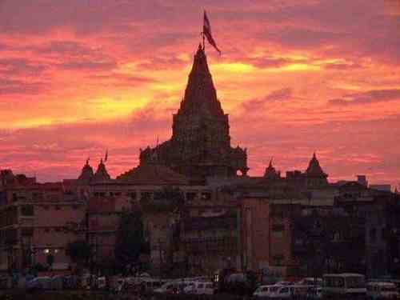
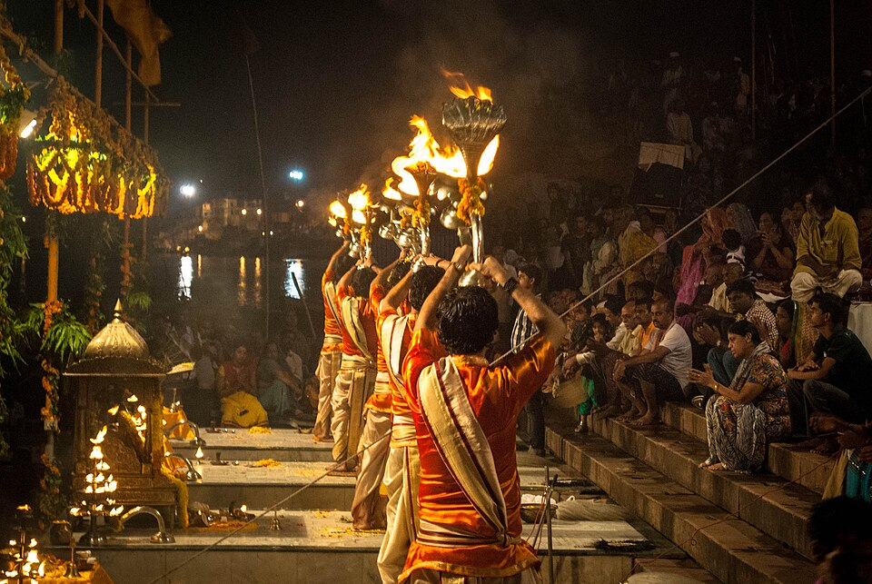
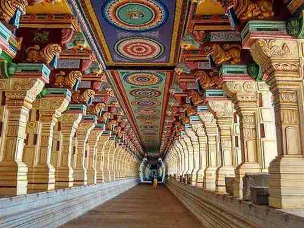
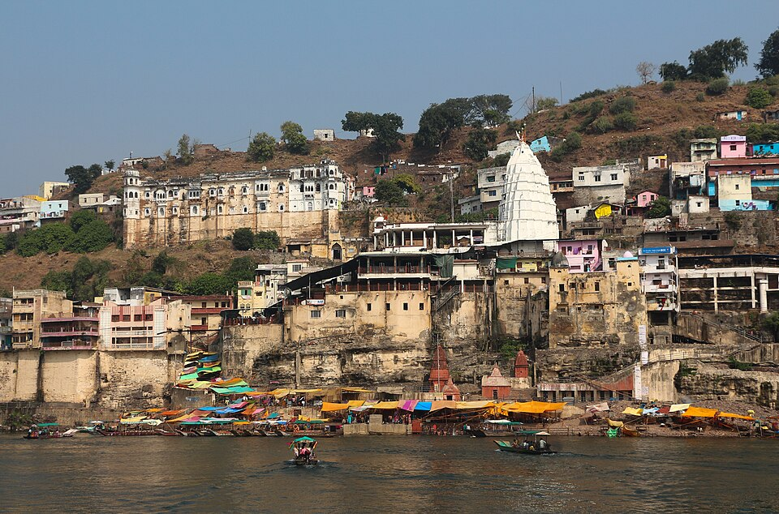
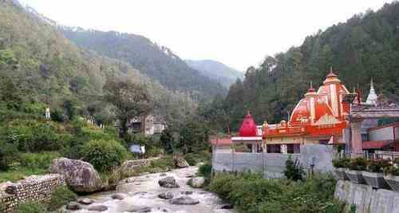
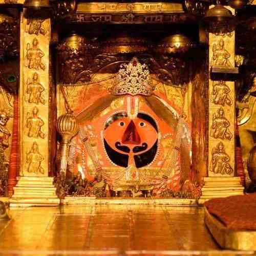
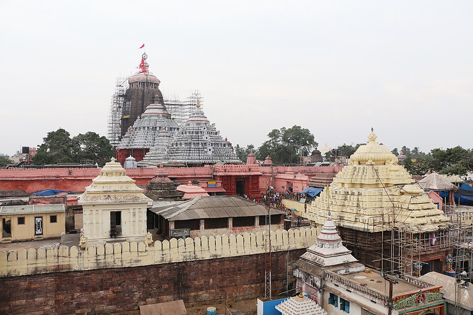
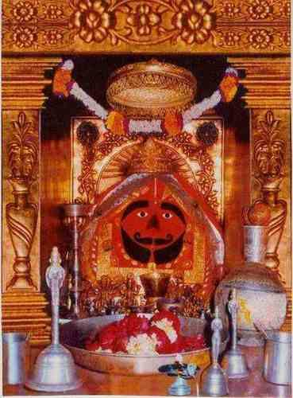

Divine journeys curated for you
Handpicked spiritual experiences — each journey curated so you focus only on the divine. Every darshan, stay and transfer arranged.
Divine circuits
Across sacred India

5N 6DDwarka + Somnath
द्वारका · सोमनाथ
4N 5DKashi + Ayodhya
काशी · अयोध्या
5N 6DRameshwaram + Madurai
रामेश्वरम्
14N 15D12 Jyotirlinga Darshan
द्वादश ज्योतिर्लिंग
Hidden spiritual gems
Quiet, beloved shrines

Nainital HillsKainchi Dham
कैंची धाम
Sikar, RajasthanKhatu Shyam Ji
खाटू श्यामजी
OdishaJagannath Puri
जगन्नाथ पुरी
Churu, RajasthanSalasar Balaji
सालासर बालाजी
Begin your sacred journey
Start planning on WhatsApp
Free consultation · Responds within 2 hours
Plan your yatra in three simple steps. From choosing your pilgrimage to arriving at the dham — we handle everything.
01
Choose your destination
Explore sacred places across India.
02
Select your travel style
Helicopter or road journeys.
03
Get your custom plan
Connect with our expert on WhatsApp.